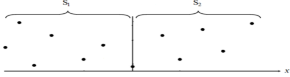
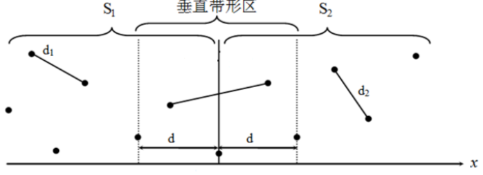
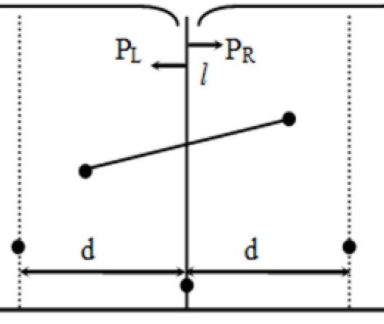
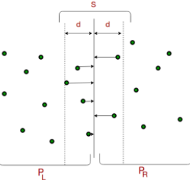
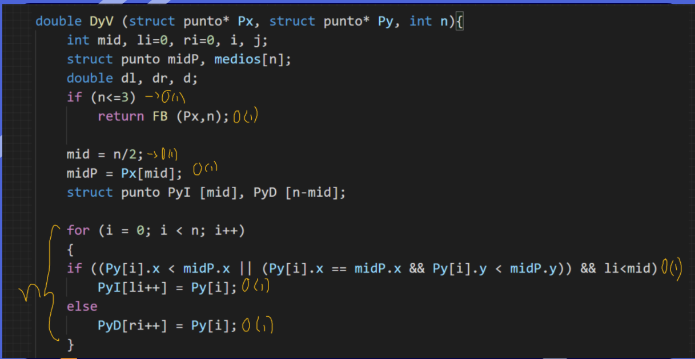
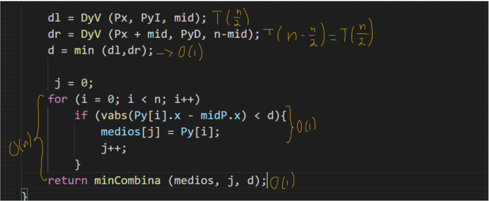
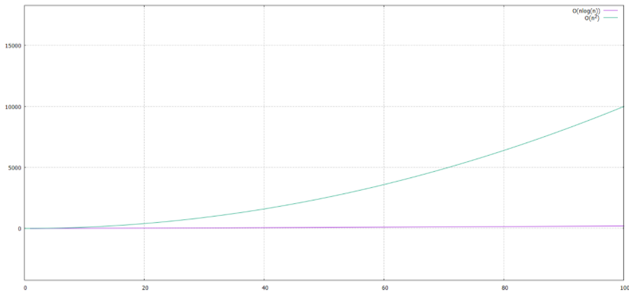

Divide y Venceras
Solución al problema del par de puntos más cercanos por el paragima de Divide y venceras
El problema del par de puntos más cercanos se trata encontrar la distancia mínima
entre un par de puntos en un conjunto dado con n puntos con coordenadas (x,y).
El primer paso del algoritmo de divede y venceras consiste en dividir el conjunto en dos subconjuntos con la misma cantidad de puntos (aunque si la cardinalidad del conjunto es par, uno de los subconjuntos tendrá un punto más). El conjunto se dividirá hasta llegar al caso de conquista, que es cuando hay dos o tres puntos en el conjunto.
De modo que se resuelven los dos subproblemas forma recursiva:
Para ello solo se consideran los puntos cuya distancia horizontal a la recta divisoria es menor a la distancia mínima considerada. Hay una demostración matemática que asegura que la máxima cantidad de puntos que cumplen la condición es de 8, por lo que este proceso puede considerarse de complejidad constante.
La cota superior de la funcion de complejidad temporal del algoritmo por divide y venceras es de es de O(n*log(n)), a continuación podemos observar la comparacion entra la complejidad del algoritmo por fuerza bruta y el algoritmo de divide y venceras, podremos observar en la grafica que el algoritmo bajo el pensamientod de divide y venceras es mucho más eficiente.
El primer paso del algoritmo de divede y venceras consiste en dividir el conjunto en dos subconjuntos con la misma cantidad de puntos (aunque si la cardinalidad del conjunto es par, uno de los subconjuntos tendrá un punto más). El conjunto se dividirá hasta llegar al caso de conquista, que es cuando hay dos o tres puntos en el conjunto.

De modo que se resuelven los dos subproblemas forma recursiva:
- Encuentre primero la distancia más corta de la mitad izquierda (el primer par de puntos)
- Encuentre la distancia más corta de la mitad derecha nuevamente (el segundo par de puntos)
- Encuentra la distancia más corta en la parte media (el tercer par de puntos)

Problema clave:
Teniendo la mínima distancia de cada lado, se compara para ver cual es la menor de ambas.
Cualquiera de ambas distancias puede ser menor, sin embargo, falta ver la distancia entre los
puntos más cercanos entre ambas secciones, pudiéndose considerar un eje vertical, si esta distancia es menor
que cualquiera de las 2 anteriores, será la que escogeremos.

Para ello solo se consideran los puntos cuya distancia horizontal a la recta divisoria es menor a la distancia mínima considerada. Hay una demostración matemática que asegura que la máxima cantidad de puntos que cumplen la condición es de 8, por lo que este proceso puede considerarse de complejidad constante.

La cota superior de la funcion de complejidad temporal del algoritmo por divide y venceras es de es de O(n*log(n)), a continuación podemos observar la comparacion entra la complejidad del algoritmo por fuerza bruta y el algoritmo de divide y venceras, podremos observar en la grafica que el algoritmo bajo el pensamientod de divide y venceras es mucho más eficiente.


